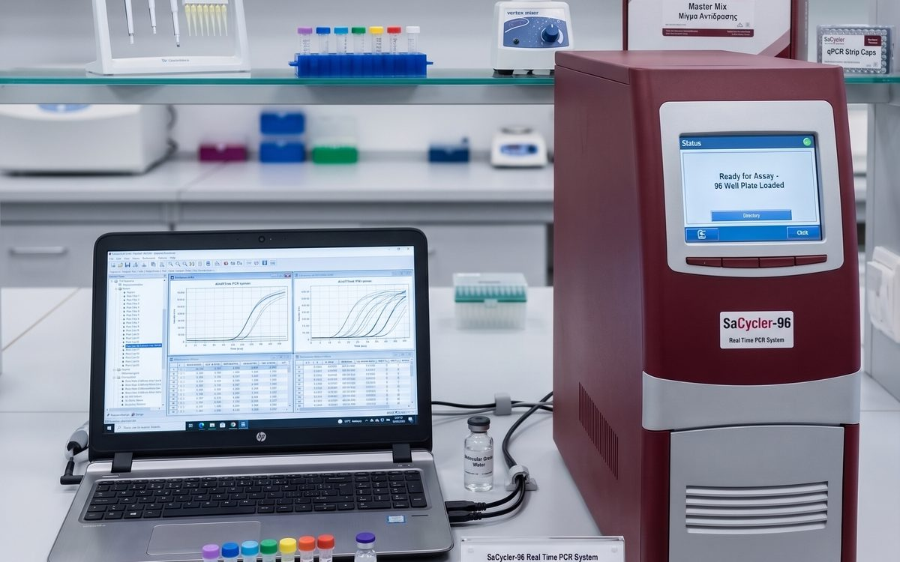
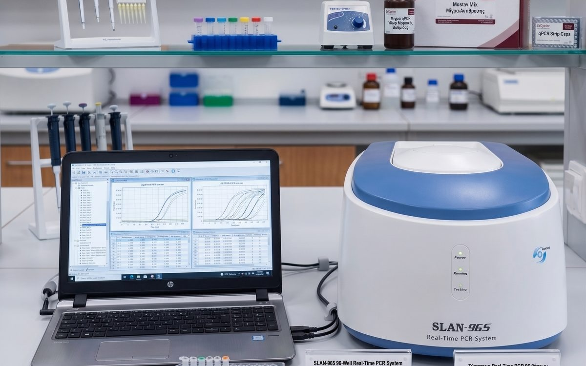
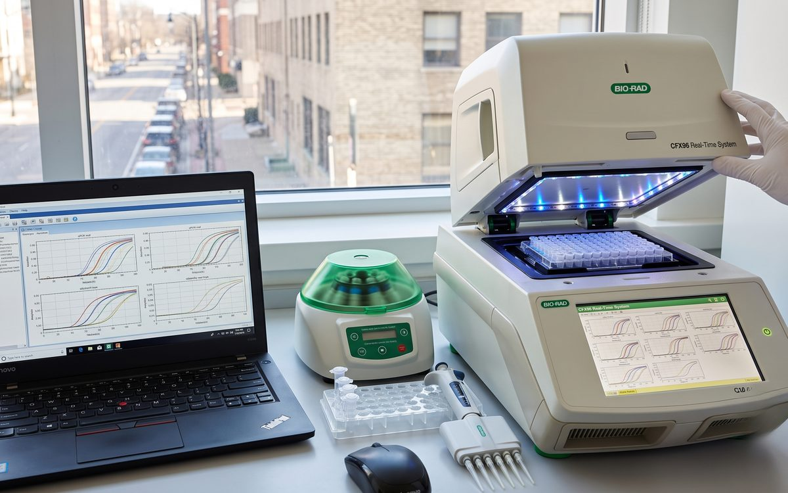
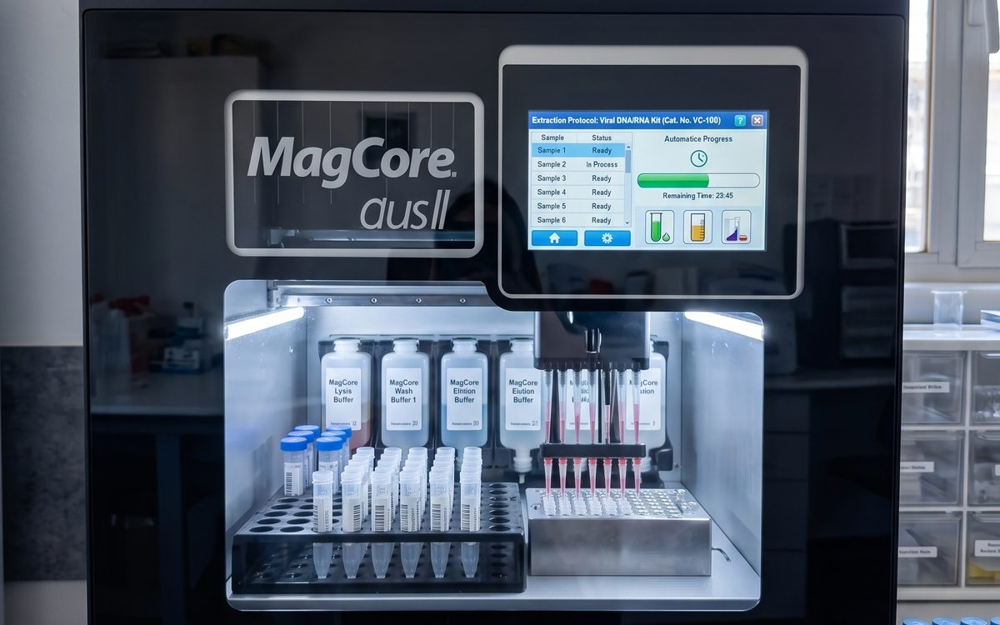
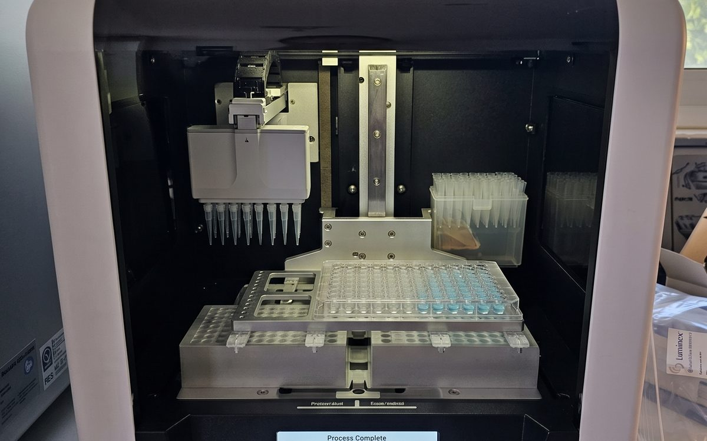
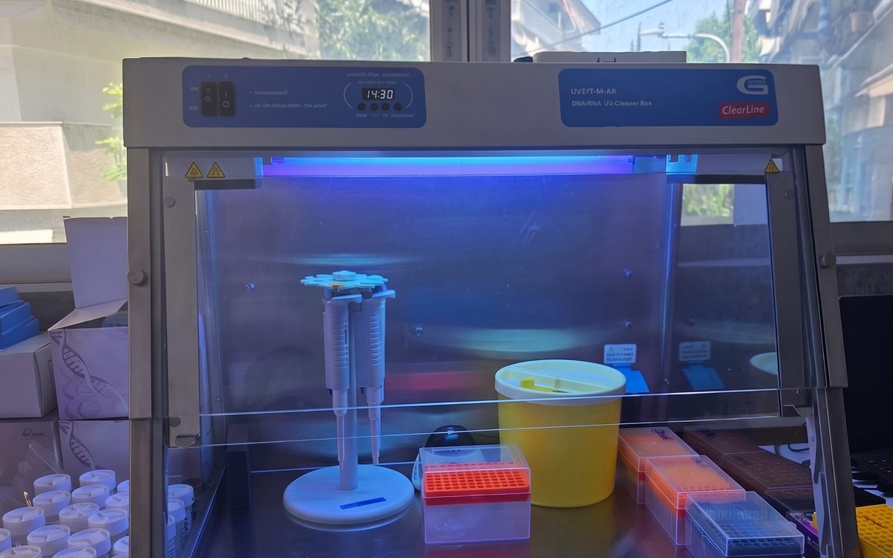
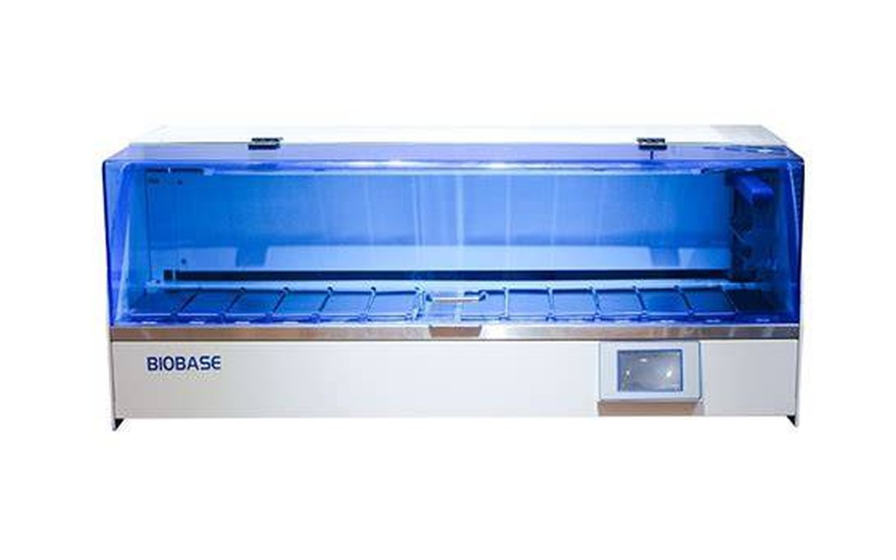

Το LIFELINE είναι ένα σύγχρονο ιδιωτικό διαγνωστικό εργαστήριο στη Θεσσαλονίκη, με κέντρο στην Τριανδρία και τμήματα Βιοπαθολογίας, Κυτταρολογίας, Μοριακής Γενετικής, Γενωμικής και εξειδικευμένης υποστήριξης IVF.
«Μια αξιόπιστη εξέταση είναι το πρώτο βήμα για τη σωστή διάγνωση — και τη φροντίδα κάθε ανθρώπου.»
Το LIFELINE Ιδιωτικό Διαγνωστικό Εργαστήριο Ιατρική ΙΚΕ προσφέρει ολοκληρωμένο φάσμα εργαστηριακών αναλύσεων σε τέσσερα εξειδικευμένα τμήματα — Βιοπαθολογία, Κυτταρολογία, Εξειδικευμένη Γυναικολογία & Υποστήριξη IVF και Μοριακή Γενετική / Γενωμική. Εξυπηρετούμε την Τριανδρία, την Τούμπα, το κέντρο Θεσσαλονίκης και τις γύρω περιοχές, με σύγχρονο εξοπλισμό, πιστοποιημένες μεθόδους και έμπειρο προσωπικό.
Τέσσερα εξειδικευμένα τμήματα καλύπτουν το σύνολο των διαγνωστικών σας αναγκών. Επιλέξτε για περισσότερα.
01
Τμήμα Βιοπαθολογίας
Πλήρες φάσμα εργαστηριακών αναλύσεων αίματος και βιολογικών υγρών — αιματολογικές, βιοχημικές, ορμονολογικές και ανοσολογικές εξετάσεις, έλεγχος πήξης και μικροβιολογικές καλλιέργειες, με αξιόπιστα και γρήγορα αποτελέσματα.
Κυτταρολογική διάγνωση με σύγχρονες τεχνικές — Τεστ Παπανικολάου και κυτταρολογία υγρής φάσης, εξέταση εκκρίματος θηλής μαστού και κυτταρολογική εξέταση ούρων, για έγκαιρη και αξιόπιστη πρόληψη.
Επενδύουμε σε αξιόπιστα συστήματα τελευταίας τεχνολογίας για ακριβή και αναπαραγώγιμα αποτελέσματα.

01
SaCycler-96 Real-Time PCR System
Σύστημα Real-Time PCR 96 θέσεων, σχεδιασμένο για την ταχεία και αξιόπιστη ανίχνευση και ποσοτικοποίηση νουκλεϊκών οξέων (DNA/RNA). Χρησιμοποιείται για μοριακές αναλύσεις υψηλής ευαισθησίας, προσφέροντας ακριβή και αναπαραγώγιμα αποτελέσματα σε διαγνωστικές και ερευνητικές εφαρμογές.

02
SLAN-96S Real-Time PCR System
Σύγχρονο σύστημα ποσοτικής PCR πραγματικού χρόνου, κατάλληλο για εφαρμογές μοριακής διάγνωσης και έρευνας. Διαθέτει δυνατότητα ανάλυσης έως 96 δειγμάτων ταυτόχρονα, εξασφαλίζοντας υψηλή ακρίβεια, ευαισθησία και αξιοπιστία.

03
Bio-Rad CFX96 Real-Time PCR Detection System
Προηγμένο σύστημα Real-Time PCR, το οποίο υποστηρίζει την ταυτόχρονη ανίχνευση πολλαπλών γενετικών στόχων. Παρέχει υψηλή απόδοση και ακρίβεια, αποτελώντας ιδανική επιλογή για εφαρμογές μοριακής διάγνωσης, γονιδιακής έκφρασης και ανάλυσης γενετικών δεικτών.

04
MagCore® Plus II Automated Nucleic Acid Extractor
Πλήρως αυτοματοποιημένο σύστημα απομόνωσης και καθαρισμού DNA και RNA, βασισμένο στην τεχνολογία μαγνητικών σφαιριδίων. Εξασφαλίζει υψηλής ποιότητας γενετικό υλικό με ελάχιστο χρόνο χειρισμού και μειωμένο κίνδυνο επιμόλυνσης, βελτιώνοντας την αποδοτικότητα του εργαστηρίου.

05
Mole Automated Nucleic Acid Extractor
Αυτοματοποιημένο σύστημα εξαγωγής και καθαρισμού νουκλεϊκών οξέων (DNA/RNA), σχεδιασμένο για γρήγορη, ασφαλή και αξιόπιστη επεξεργασία δειγμάτων. Η πλήρης αυτοματοποίηση της διαδικασίας εξασφαλίζει υψηλή αναπαραγωγιμότητα και ελαχιστοποιεί τον κίνδυνο επιμόλυνσης, καθιστώντας το ιδανικό για εργαστήρια μοριακής διάγνωσης υψηλής παραγωγικότητας.

06
PCR Hood (UV-Cleaner Box)
Εξειδικευμένος θάλαμος εργασίας με σύστημα αποστείρωσης UV, σχεδιασμένος για την ασφαλή προετοιμασία δειγμάτων και αντιδραστηρίων μοριακής βιολογίας. Εξασφαλίζει καθαρό περιβάλλον εργασίας, ελαχιστοποιώντας τον κίνδυνο επιμόλυνσης και ενισχύοντας την αξιοπιστία των μοριακών αναλύσεων.

07
Biobase BK-RS1A Automated Tissue Stainer
Αυτόματος βαφέας αντικειμενοφόρων πλακών υψηλής απόδοσης για το Κυτταρολογικό Εργαστήριο. Αυτοματοποιεί και τυποποιεί τη διαδικασία χρώσης (όπως η κλασική χρώση Αιματοξυλίνης – Ηωσίνης / H&E), αντικαθιστώντας τις χειροκίνητες διαδικασίες και εξασφαλίζοντας σταθερά, επαναλήψιμα αποτελέσματα με εξοικονόμηση χρόνου.
Χωρητικότητα: 14 δοχεία των 1200 ml, έως 72 αντικειμενοφόρες πλάκες ανά κύκλο.
Προσαρμόσιμα προγράμματα: πλήρως παραμετροποιήσιμη μέθοδος και χρόνος χρώσης, από λίγα δευτερόλεπτα έως 59 λεπτά ανά σταθμό.
Έγχρωμη οθόνη αφής LCD: παρακολούθηση της λειτουργίας σε πραγματικό χρόνο και εύκολη διαχείριση μενού.
Αυτόματο στέγνωμα: έξυπνος έλεγχος θερμού αέρα για αποτελεσματικό στέγνωμα με μειωμένη κατανάλωση ενέργειας.
Προστασία & ασφάλεια: πλήρως κλειστή δομή με φίλτρο ενεργού άνθρακα, χωρίς έκλυση τοξικών αερίων στον χώρο του εργαστηρίου.
Μείωση επιμόλυνσης: ρυθμιζόμενος χρόνος στάλαξης που ελαχιστοποιεί το carry-over μεταξύ δεξαμενών και παρατείνει τη ζωή των αντιδραστηρίων.
05 Περιοχές Εξυπηρέτησης
Διαγνωστικές εξετάσεις στη Θεσσαλονίκη
Εξυπηρετούμε την Τριανδρία, το Κέντρο Θεσσαλονίκης και τις γύρω περιοχές με εργαστηριακές, κυτταρολογικές και μοριακές εξετάσεις.
Τριανδρία
Μικροβιολογικό και μοριακό εργαστήριο στην Ελευθερίας 34, για αιματολογικές, βιοχημικές, ορμονολογικές και μοριακές εξετάσεις, με δυνατότητα κατ' οίκον αιμοληψίας κατόπιν ραντεβού.
Συνολική βαθμολογία 5.0 / 5.0 από αξιολογήσεις ασθενών στο Google.
★★★★★
«Άψογη οργάνωση και γρήγορα αποτελέσματα. Έλαβα τις αναλύσεις μου online την ίδια μέρα, με ξεκάθαρη ενημέρωση.»
Μ
Μαρία Κ.Ασθενής · Google
★★★★★
«Πολύ ευγενικό και επαγγελματικό προσωπικό. Η αιμοληψία έγινε γρήγορα και με προσοχή. Τα συνιστώ ανεπιφύλακτα.»
Δ
Δημήτρης Π.Ασθενής · Google
★★★★★
«Έκανα γενετικό έλεγχο και με καθοδήγησαν σε κάθε βήμα. Αξιόπιστο εργαστήριο με σύγχρονο εξοπλισμό.»
Ε
Ελένη Σ.Ασθενής · Google
★★★★★
«Καθαρός και σύγχρονος χώρος, συνέπεια στα ραντεβού και αξιόπιστα αποτελέσματα. Το εμπιστεύομαι για όλη την οικογένεια.»
Γ
Γιώργος Α.Ασθενής · Google
Σύρετε για περισσότερες κριτικές
07 Επικοινωνία
Κλείστε το ραντεβού σας
Είμαστε εδώ για κάθε ερώτηση σχετικά με τις εξετάσεις σας. Επικοινωνήστε τηλεφωνικά ή επισκεφθείτε το διαγνωστικό εργαστήριο στην Ελευθερίας 34, Τριανδρία Θεσσαλονίκης.